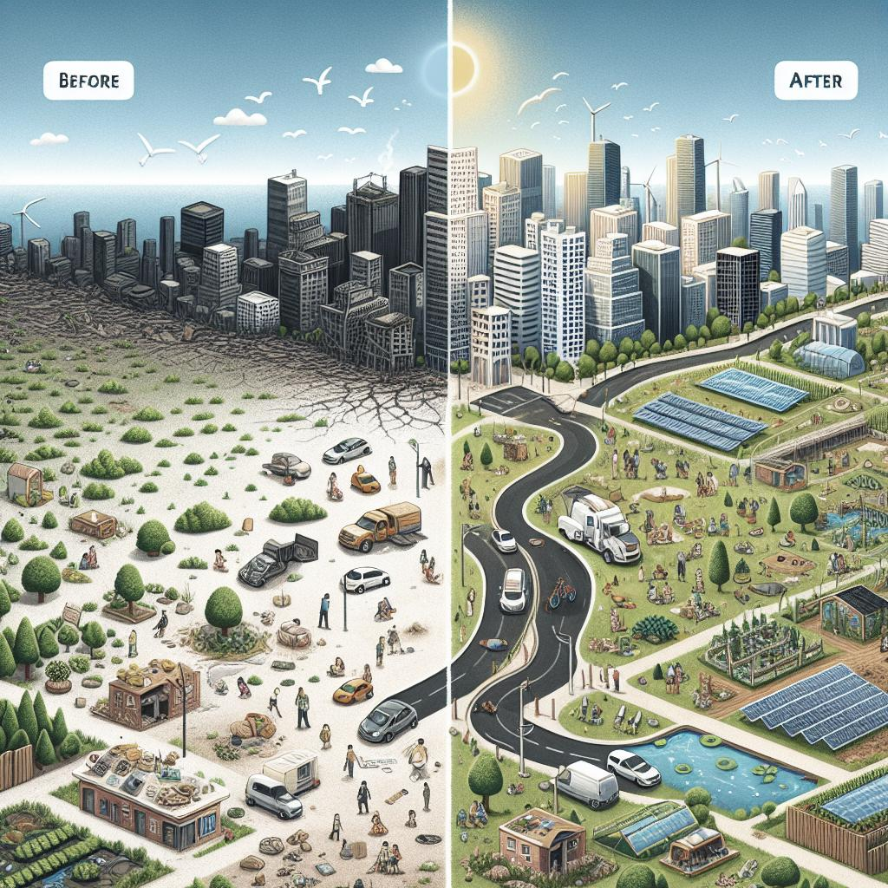

What Is SDG 11?
SDG 11, or Sustainable Development Goal 11, aims to make cities and human settlements more inclusive, safe, resilient, and sustainable. It addresses urban challenges such as housing, transportation, air quality, and infrastructure, and focuses on ensuring that cities can grow and develop while also improving quality of life for all. The goal promotes sustainable urbanization through the efficient use of resources, equitable access to services, and reducing impacts on the environment, to ensure that cities can thrive together with nature.

Why Is It Important?
Over half the world's population live in urban areas today, making cities play a crucial role in economic growth, innovation, and cultural exchange. However, rapid urbanization can often lead to issues like overcrowding, pollution, and inequality. SDG 11 is essential because it seeks to balance urban growth with sustainability, to ensure that cities can provide opportunities, improve livelihoods, and foster social inclusion without compromising the environment's health or the well-being of future generations.
Global and Local Impact
SDG 11 has far-reaching implications, both globally and locally. On a global scale, it addresses issues such as climate change, sustainable resource management, and economic inequality, which are magnified in densely populated urban areas. Cities around the world must collaborate to adopt sustainable practices and share innovations that help reduce environmental footprints and foster social inclusivity. Locally, SDG 11 focuses on improving living conditions, enhancing public services, and promoting green spaces. Its success relies on community-level efforts to create safer, more resilient neighborhoods and ensure that urban development benefits all residents, regardless of their socioeconomic background.